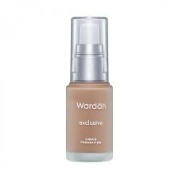
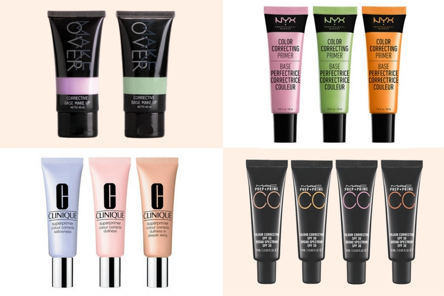
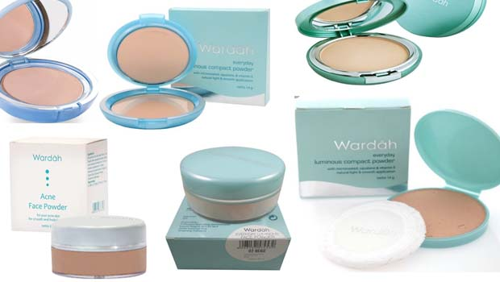
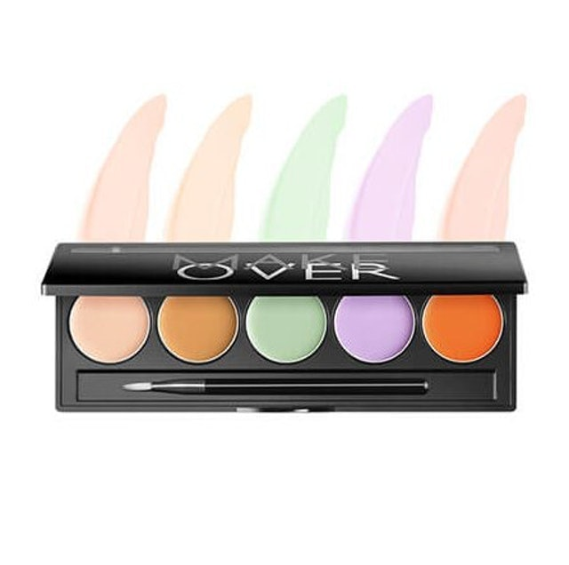
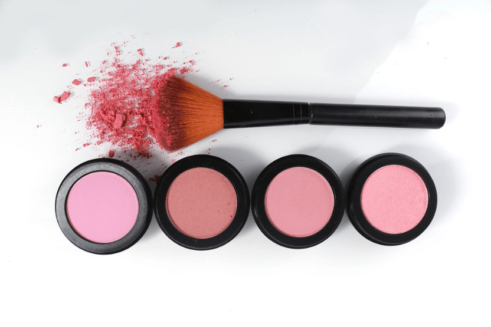
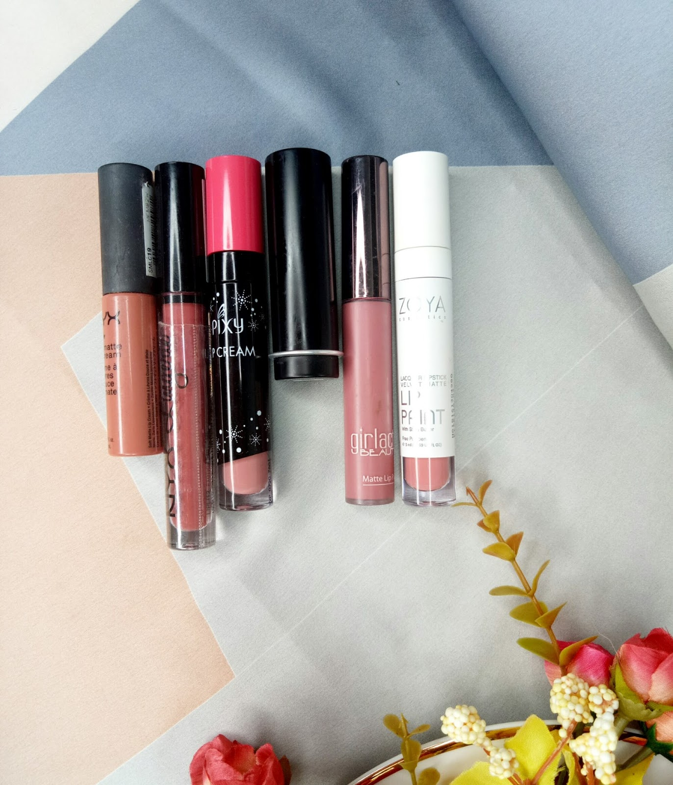
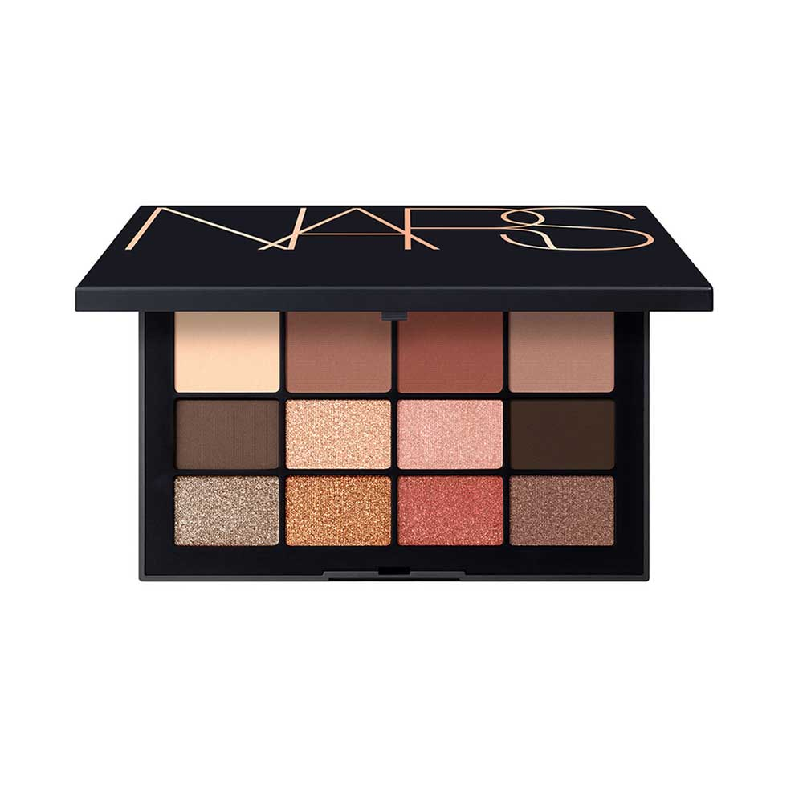
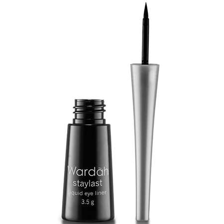
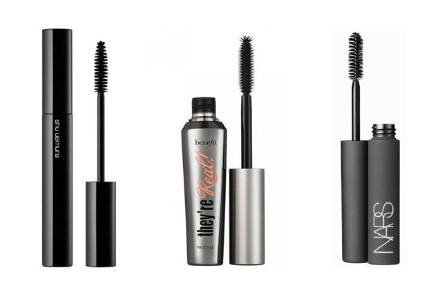

 Foundation adalah salah satu alat make up pemula yang wajib dimiliki oleh wanita. Foundation biasanya dipakai menggunakan foundation brush atau alat untuk mengaplikasikannya pada kulit wajah wanita. Rabu 03, 2021 12
 Selain menggunakan foundation, kita juga bisa loh menggunakan primer sebagai dasar ketika kita ingin bermakeup. Terkadang primer juga bisa dipadukan dengan foundation sehingga bisa membuat permukaan kulit kita menjadi lebih halus agar foundation bisa diaplikasikan secara maksimal. Selain itu, alat make up ini juga bisa menutup pori-pori yang membesar pada wajah anda. Primer juga merupakan salah satu peralatan make up esensial yang tidak bisa dilewatkan bagi setiap wanita. Rabu 03, 2021 12
 Bedak merupakan produk kosmetik atau alat make up untuk pemula yang wajib anda miliki sebagai wanita. Dengan penggunaan nya yang praktis dan bisa anda gunakan kapan saja dan dimana saja. Bedak juga sangat disarankan bagi anda yang memiliki wajah yang berminyak. Rabu 03, 2021 12
 Concealer adalah salah satu peralatan make up yang berguna untuk menutupi kekurangan di bagian wajah kita. Concealer bisa membuat kulit wajah kita menjadi lebih halus dan mulus ketika kita mengaplikasikannya pada kulit wajah. Alat make up yang satu ini banyak digunakan oleh wanita karena cocok digunakan untuk berbagai macam jenis kulit. Mulai dari kulit berminyak, kulit kering hingga kulit berjerawat. Rabu 03, 2021 12
 Blush on merupakan salah satu alat make up yang paling banyak dipakai oleh wanita. Apalagi bagi wanita kantoran, tentu saja Blush on bisa membantu mereka agar tampil perfect dan juga mengesankan ketika bekerja. Sedangkan bagi para wanita rumahan, Blush on berguna untuk memberikan kesan rona yang segar dan juga alami pada bagian pipi. Rabu 03, 2021 12
 Pada dasarnya Lipstik ini dipakai agar tampilan bibir bisa menjadi lebih sempurna. Dengan sedikit polesan Lipstik pada bibir tentu saja bisa membuat bibir menjadi lebih merona dan juga indah. Yang pasti Lipstik berguna untuk menutupi kekurangan yang ada pada bibir kita seperti bibir yang pucat dan gelap, nah Lipstik berguna untuk merubahnya menjadi lebih segar dan merona. Lipstik juga berguna untuk membuat bibir menjadi terlihat lebih bervolume atau terlihat lebih tebal dengan cara mengaplikasikan alat make up ini satu garis diatas atau diluar bibir alami kita. Lipstik bisa membuat bibir anda terlihat lebih segar. Rabu 03, 2021 12
 Eye shadow. Bagi anda yang suka merias wajah terutama bagian mata tentu saja sudah tidak asing lagi dengan Eye shadow. Bagi sebagian orang Eyeshadow menjadi salah satu makeup essential yang wajib dibawa kemana-mana mereka pergi. Cara pengaplikasian Eye shadow ini sebenarnya hampir sama seperti pengaplikasian eyeliner. Yaitu sebelum kita memakai alat make up ini, sebaiknya kita basahkan dulu kuas dari Eyeshadow supaya teksturnya menjadi lebih padat dan juga pekat. Kemudian anda bubuhkan Eyeshadow di bagian garis mata sampai ke ujung, dan gunakan seperti bagaimana anda menggunakan eyeliner. Eye shadow juga bisa digunakan untuk memperhalus kelopak mata karena memiliki manfat untuk menetralisir kelopak mata yang kering atau berminyak. Rabu 03, 2021 12
 Eyeliner berguna untuk menegaskan dan juga membesarkan bentuk mata kita. Selain itu penggunaan dari Eyeliner pada mata juga berguna untuk menambahkan aksen di kelopak mata kita. Kita hanya tinggal membentuk Eyeliner sesuai dengan tema make up yang kita inginkan, dengan begitu mata kita akan berubah menjadi tambah cantik dengan Eyeliner. Rabu 03, 2021 12
 penggunaan maskara lebih mudah dan juga lebih dianjurkan bagi wanita yang ingin mendapatkan bulu mata yang panjang, tebal dan lentik. Penggunaan Maskara yang sangat mudah membuat alat make up ini menjadi pilihan dan favorit bagi setiap wanita. Kita hanya tinggal menyapukan atau mengoleskan Maskara di bulu mata ketika semua kombinasi make up sudah selesai. Maskara berguna untuk semakin membuat tampilan kita menjadi lebih sempurna. Rabu 03, 2021 12